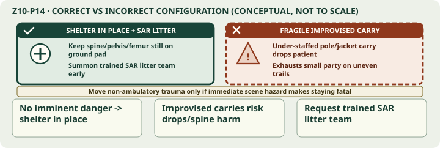

Z10-P14 · Wilderness medicine · New manuscript
Recognize improvised litter hazards and when not to move a patient
Prevent catastrophic secondary spinal, bleeding, or drop injuries caused by premature improvised carries.
When it applies · Non-ambulatory injured persons in backcountry terrain before trained SAR litter teams arrive.
Equipment · Insulating pads, shelter tarp/tent, dry layers, and communication device.

Actions
- Do NOT move a non-ambulatory patient with suspected neck, spine, pelvis, femur, or internal injury unless immediate life-threatening scene danger (rising floodwater, fire, rockfall, or airway threat) forces a short urgent move.[M11, M09, T01]
- Recognize that improvised pole-and-jacket litters require six to eight fresh rotating carriers on uneven trails and often collapse, drop the patient, or exhaust small parties within a few hundred yards.[T06, M20, ED]
- Prioritize building warm windproof ground-insulated shelter around the patient in place while activating professional SAR litter teams equipped with rigid stretchers and rigging.[E05, T06, M05]
Failure recognition · Loading a suspected spinal-injury patient onto a sagging improvised jacket stretcher with three tired hikers on a rocky descent.[M11, T06]
Verify · Confirm scene is stable, patient is insulated in place, and SAR dispatch knows the patient is non-ambulatory and requires a litter team.[T06, M11, M20]
Stop or change course · If a life-threatening hazard forces moving an injured person, keep the body aligned as one unit over the shortest distance to safety, then halt and stabilize.[T01, M11]
Evidence and editorial notes
- E05 · NWS · What To Do If You're Caught in a Winter Storm (current web edition)
- Section: Outside and find shelter · Conditions: Cold, wet or windy winter conditions
Support: Block wind, stay dry and keep off cold ground. Keep exposure reduction separate from making a fire.
Limitations: Improvised windbreaks do not provide rated thermal protection or snow-load capacity. · Conflicting evidence: None; aligns with CDC-H.
Editorial note: Separates wind, ground, and moisture heat-loss pathways. · Specialist reviewer: Cold-weather shelter specialist
Primary source · checked 2026-11-24 - M05 · NIH / MedlinePlus · Shock (current web edition)
- Section: Recognizing Circulatory Shock and Positioning · Conditions: Injured or ill patient with pale cool clammy skin, rapid weak pulse, confusion, or dizziness
Support: Treat suspected shock as a life-threatening emergency: call 911, control external bleeding, keep the person warm and insulated from cold ground, and do not give food or drink.
Limitations: Field responders cannot diagnose internal hemorrhage or administer IV fluids. · Conflicting evidence: None; reinforces keeping suspected shock patients NPO and warm.
Editorial note: Core shock recognition and stabilization boundary in Z10. · Specialist reviewer: Emergency and wilderness medicine
Primary source · checked 2026-11-24 - M09 · NIH / MedlinePlus · Fractures (current web edition)
- Section: Suspected Fracture Stabilization and Neurovascular Checks · Conditions: Suspected limb fracture, deformity, or inability to bear weight
Support: Immobilize the injured limb in the position found using padded support without attempting to straighten visibly deformed bones; check circulation, sensation, and movement beyond the injury and arrange evacuation.
Limitations: Open fractures (bone breaking skin) and femur/pelvis injuries carry high bleeding and infection risk requiring urgent EMS. · Conflicting evidence: None; forbids lay fracture reduction in routine field care.
Editorial note: Anchors splinting, neurovascular checks, and evacuation urgency in Z10. · Specialist reviewer: Orthopedics and wilderness medicine
Primary source · checked 2026-11-24 - M11 · CDC · Symptoms of Mild TBI and Concussion (2025)
- Section: Danger signs in adults; Danger signs in children · Conditions: Head impact or suspected mild brain injury; age matters
Support: Seek emergency care for danger signs such as worsening headache, repeated vomiting, altered behavior or difficulty waking.
Limitations: Spinal precautions, older-adult blood thinners, and return to activity require separate clinical or dispatcher guidance. · Conflicting evidence: See A02 claim audit for boundaries.
Editorial note: Grounds head-trauma, concussion, and spinal-motion-restriction cards. · Specialist reviewer: Neurotrauma and wilderness EMS
Primary source · checked 2026-11-25 - M20 · NIH / MedlinePlus · First Aid Overview (current web edition)
- Section: Lay First-Aid Scope, Kit Readiness, and Documentation · Conditions: Pre-trip kit preparation and remote patient monitoring
Support: Maintain an inspected, unexpired first-aid kit matched to your actual training, keep written patient observations (time, responsiveness, breathing, symptoms, interventions) for EMS handoff, and practice skills in certified courses.
Limitations: Carrying advanced medical instruments without clinical training adds risk rather than capability. · Conflicting evidence: None; aligns with ARC and NPS-K.
Editorial note: Anchors kit sizing, SOAP-style lay observation logs, and scope-of-practice cards. · Specialist reviewer: Wilderness EMS and clinical education
Primary source · checked 2026-11-24 - T01 · American Red Cross · First Aid Steps (current web edition)
- Section: First Aid Steps > Check the scene; check the person · Conditions: Lay responder in United States; assess safety before contact
Support: Check scene safety, responsiveness, breathing and immediately life-threatening conditions.
Limitations: Lay guidance does not replace advanced clinical or rescue protocols. · Conflicting evidence: None; universal first-response opening gate.
Editorial note: Anchors scene-safety-first rule across Z01. · Specialist reviewer: EMS and wilderness medicine
Primary source · checked 2026-11-24 - T06 · NPS · Outdoor Emergency Plan (current web edition)
- Section: If you get lost or hurt; call for help · Conditions: Outdoor US emergency
Support: Communicate location, last known point, situation and needs. Stay put when unable to establish a safe route unless immediate danger requires movement.
Limitations: Cell signal is unreliable in backcountry terrain; pre-trip plans bridge communication gaps. · Conflicting evidence: None; core lost-person decision rule.
Editorial note: Foundation for stay/signal/move and dispatch handoff cards. · Specialist reviewer: Search and rescue
Primary source · checked 2026-11-24
Source lineage · NPS Emergency Plan and NIH MedlinePlus; new manuscript · Classification · New manuscript.